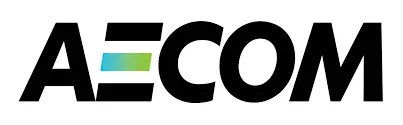

TL;DR
Consultant Developer at Thoughtworks, working in the airline booking domain. Full stack developer with 4+ years in IT and a past life as a civil engineer and cost estimator.
I embrace AI and leverage it in my daily workflow, customizing agent tooling and workflows to fit how I work.
Professional Experience
Thoughtworks Thailand Co., Ltd
Jan 2025 - Present ✅
Consultant Developer
- Major airline client, booking domain. Working in a 15+ person distributed team within a 100+ person delivery program.
- Trusted by the client as an explainer: visual walkthroughs of complex booking concepts and proposed solutions, praised by non-technical stakeholders and teammates alike.
- Day-to-day delivery on a legacy .NET and React codebase with TDD and pair programming.
- Built internal tools adopted across the team, cutting debugging time and unblocking teammates during investigations; referenced in spikes and tickets as the standard investigation aid.
- Active in grooming and refinement: proposing ideas, hunting edge cases, shaping requirements.
- Investigated bugs across team boundaries, collaborating with other teams to land fixes.
ITOne Co., Ltd.
Oct 2021 - Dec 2024
My first IT job — where I learned to deliver every aspect of a product for the first time, from design to production.
Sr. Analyst — Dev Lead
Dec 2023 - Dec 2024
- Led a team of 3–4 junior developers — mentored them on writing good code and engineering practices, back when there was no AI to ask, just code review and patience.
- Delivered projects end-to-end, from design through build to production.
- Worked with my manager to propose solutions, estimate effort, and price client service requests.
Analyst — Full-stack Developer
Oct 2021 - Nov 2023
- Full-stack delivery: Angular + RxJS frontends; APIs in .NET 6, NestJS, and AWS Lambda.
- Led development of a resource-planning web app that replaced an Excel VBA workflow for ~20 users: plans uploaded as Excel, validated and calculated server-side, Azure AD sign-in. Delivered end-to-end from design to production, infra set up with our cloud engineer.
- Built the frontend for an app summarizing AWS API Gateway usage by usage plan.
- Automated IAM access key rotation with an AWS Lambda: email notice, disable, regenerate, delete on schedule.
WAL Consultant Co., Ltd.
Aug 2018 - May 2021
Cost Engineer
- Ran competitive bidding end-to-end: estimated what projects should cost before bids came in, evaluated and compared contractor proposals, then interviewed, negotiated, and prepared contracts with the winners.
- Estimated construction costs across the full scope of a building: structure, architecture, interiors, landscape, and external works.
- Managed the money side of live construction projects: verified contractor payment claims, priced scope changes, and settled final accounts.

Aecom Cost Consulting (Thailand) Co., Ltd.
Oct 2017 - Jun 2018
Cost Engineer
Technical Skills
Frontend
- Sound knowledge of JavaScript, TypeScript, rxjs, React
 , and Angular .
, and Angular .
- Comfortable with UI libraries such as PrimeNg, Bootstrap, and MaterialUI.
- Experienced with Redux/Ngrx.
- Learned Tailwind CSS, hate/love it.
Backend
- 3 years of experience in .NET and 2 year in NestJS (nodejs). Proficient in code-first database development with EntityFramework and TypeORM.
- Familiar with MS SQL, Postgres, and MySQL.
AI & Machine learning
- Trained, developed, and deployed various machine learning models.
- Linear and logistic regression, KNN, K-Means, Decision Tree, NN, SVM, PCA and more.
- Comfortable with library such as scikit-learn, NumPy, pandas, matplotlib and more.
- My final project (ML course) in 2021: generative AI producing images of Thai houses, built with PyTorch.
- AI-assisted development: daily Claude Code power user with a customized setup of subagents, hooks, and skills, including a token-optimization plugin that compresses agent output to stretch context and cut session cost.
- Agentic workflows: multi-agent setups (investigator / builder / reviewer subagents) with isolated git worktrees and an issue-tracker-driven build process.
- Generative AI usage: Stable Diffusion for image generation, Ollama for local LLM inference.
Cloud / Infra / ITSM
I'm a developer working in a cloud team where we typically have a cloud engineer responsible for setting up the infrastructures. However, I do have some exposure to various cloud providers.
- AWS Certified Cloud Practitioner, Azure AZ900, and GCP.
- ITIL4 Foundation certificate.
- Docker
 .
.
Others
- Vim, Oh My ZSH and macOS user.
- Experienced with Git.
Learning backlog
Intent, not regret:
- Real-time systems: WebSocket, MQTT, Kafka
- NoSQL
- Mobile dev
Education
- M.S. (Computer Science and Information Systems) - NIDA | 2019 – 2023
- B.Eng. (Civil Engineering) – Chulalongkorn University | 2013 – 2017